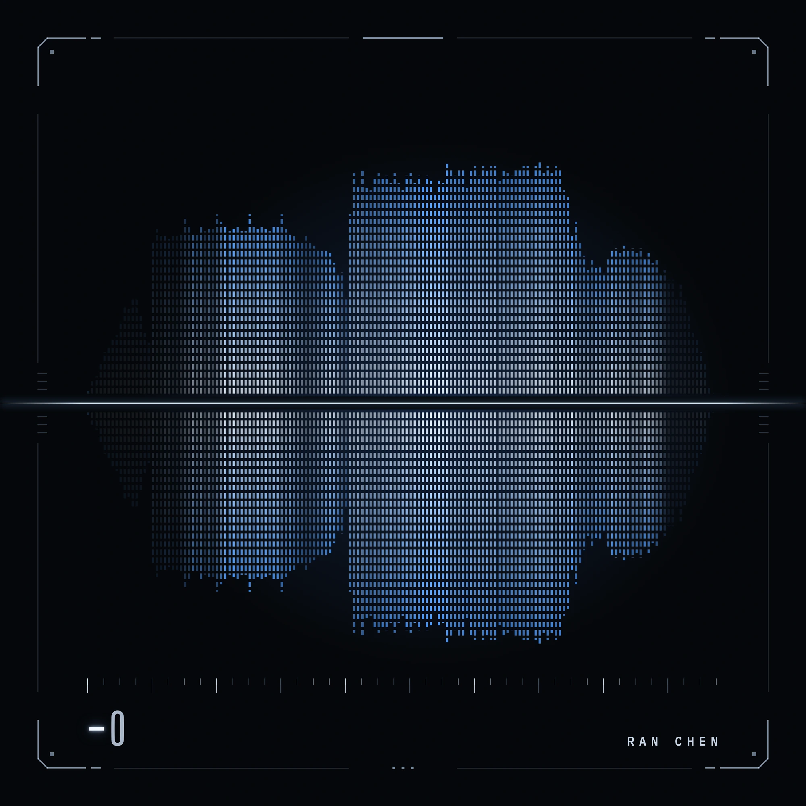
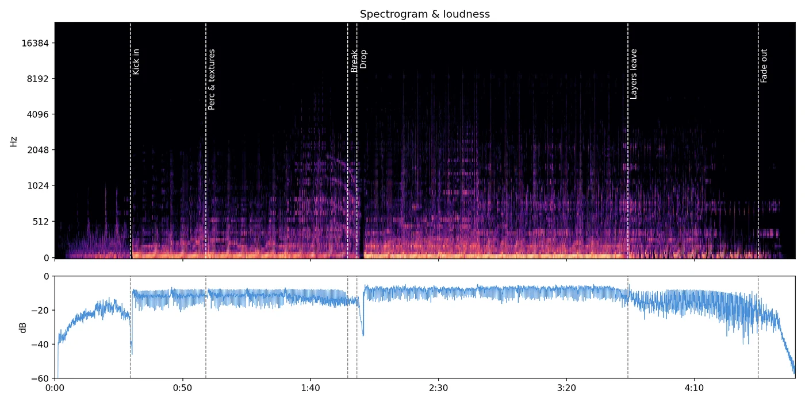
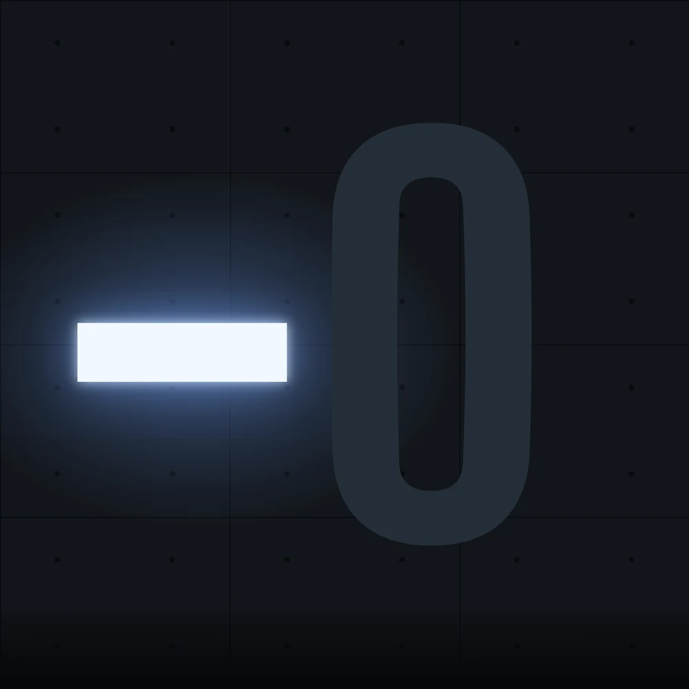
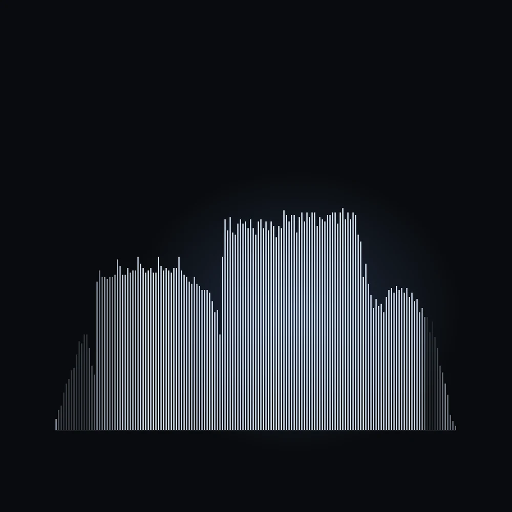
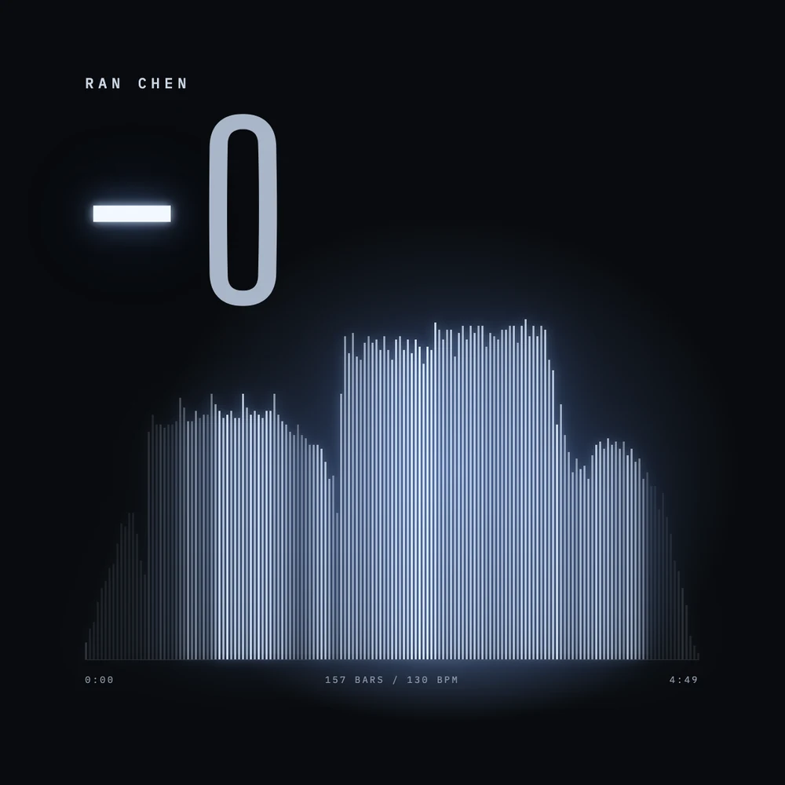
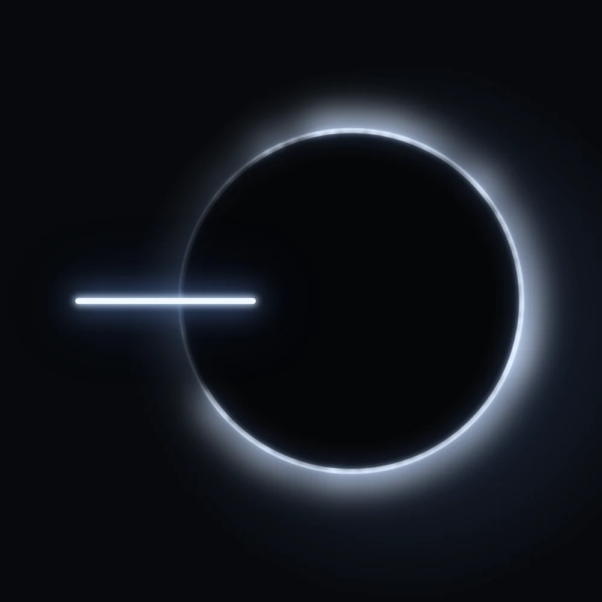
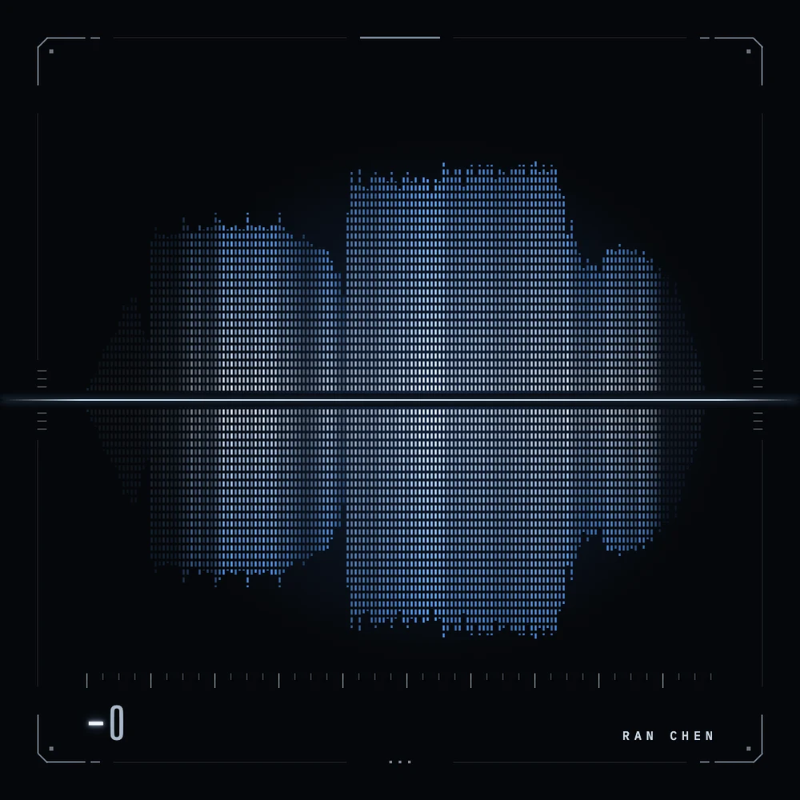
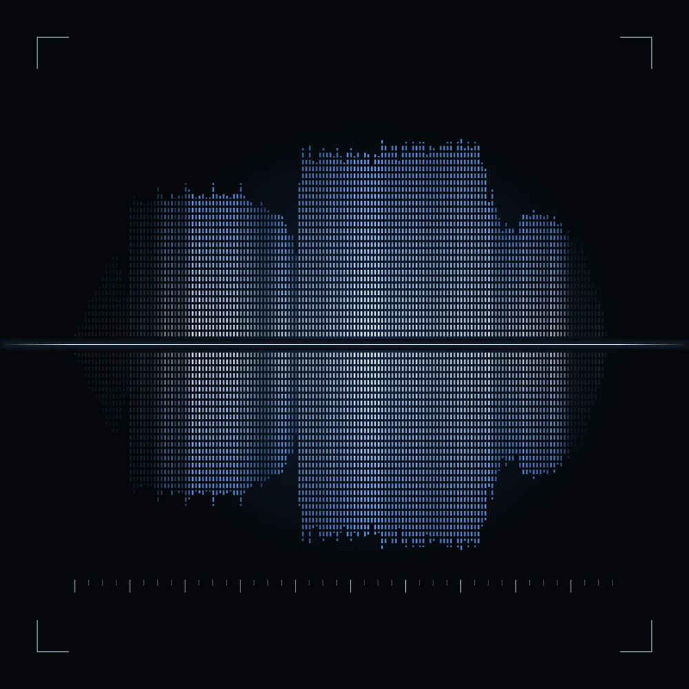
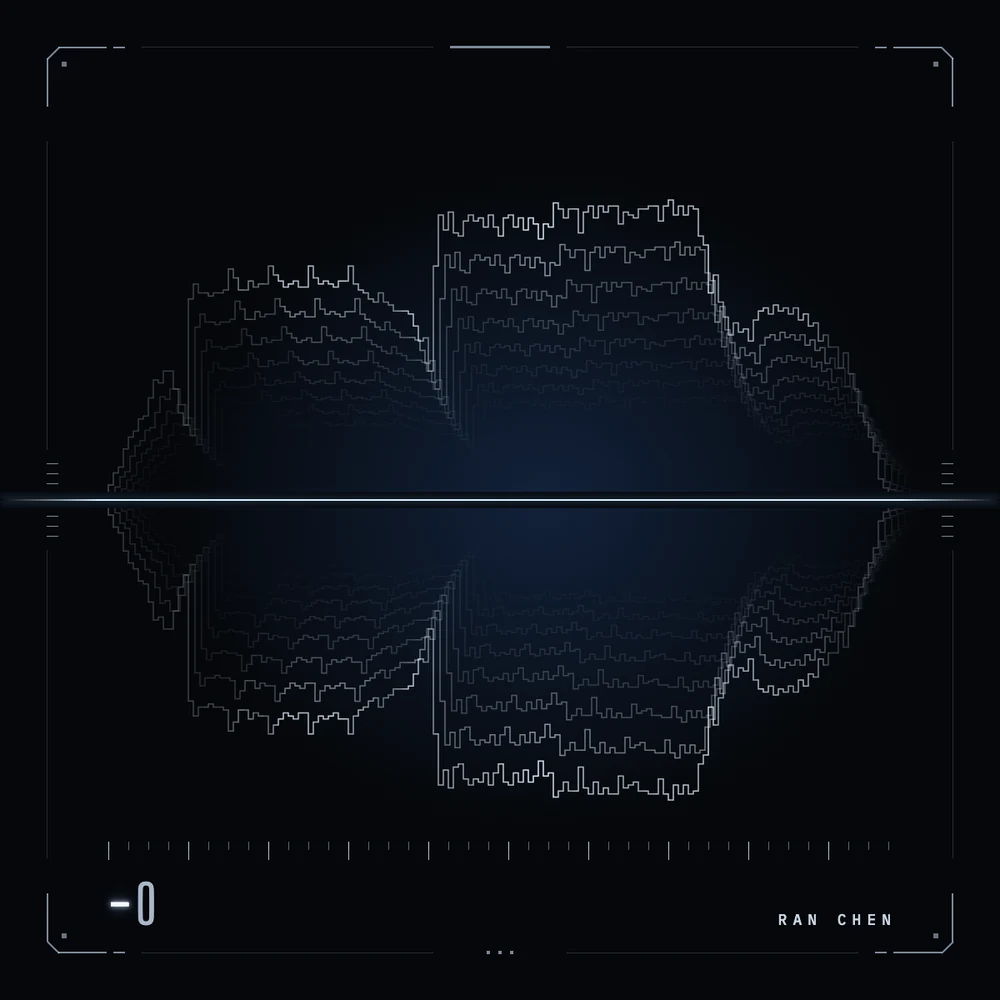
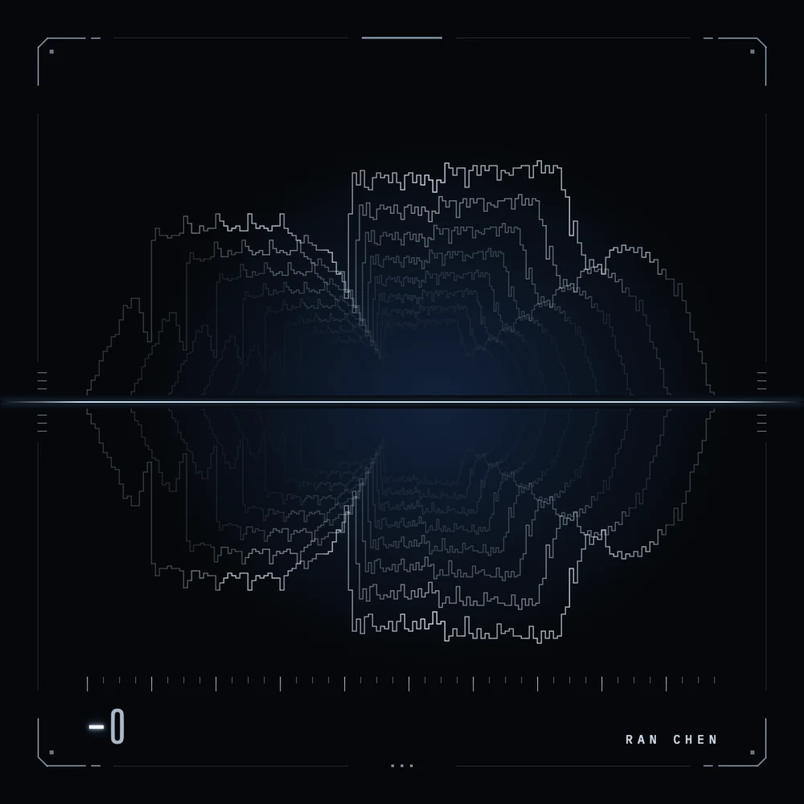

−0
Cover for my own techno track. 157 bars of music become 157 bars of light.

- Track
- −0 · techno · 130 BPM · 4:49
- My role
- Composition, production, mix, master and cover
- Tools
- Ableton Live, Python audio analysis, Claude on a Claude Design canvas
- Context
- DSC 494 · Week 06 · Fall 2026 class project
The track is 157 bars long, so the cover has 157 bars. Each one’s height is that bar’s loudness and its brightness is that bar’s measured spectral brightness; the thin line through the middle is the minus sign of the title.
Let the track draw it
The exported WAV was analysed in Python. Loudness ranged from −49.5 to −4.3 dBFS and spectral centroid from 217 to 3,272 Hz across the 157 bars. When a reference and the data disagreed, the data won.

Three directions
Three prompts answered the same song in different ways, all without lettering. I chose C and kept one idea from B: the minus sign as a lit tube.


Three finals
I called the cover finished three times. The first read as a labelled chart. The second met every measured target and I still rejected it, because it had lost the bars and gone soft.



One focused change
With the image settled, only the edges changed. I added a small title, my name and a more detailed frame built from shapes already in the cover. The bars, centre line and colours stayed exactly the same.

BeforeAfterThe last test
Delay with feedback is one of the most basic tools in my mixing work, so I tried a single thin line repeated like a delay and like video feedback. Both worked technically. I kept the cells, and that is where I stopped.


Reflection
Passing my own measurements did not mean the cover was right. The numbers checked whether a decision was carried out; they could not tell me whether it was the right decision.